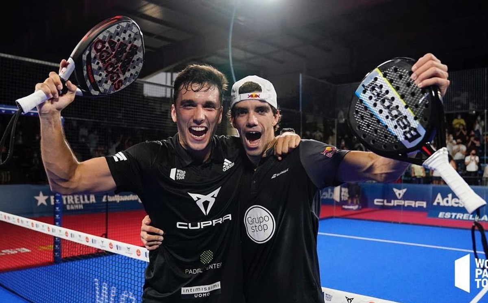
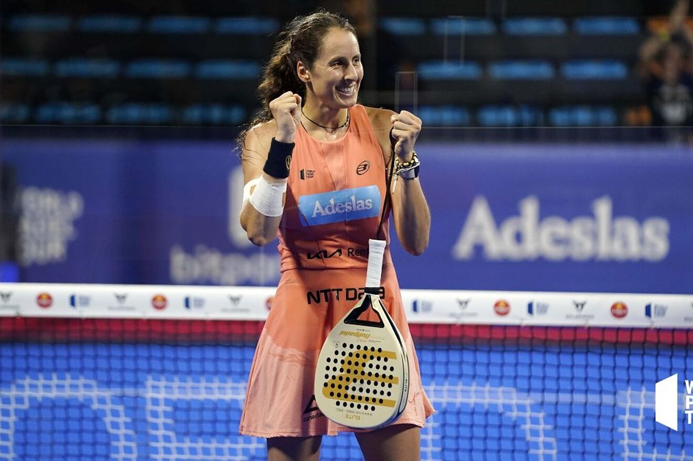
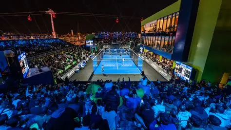
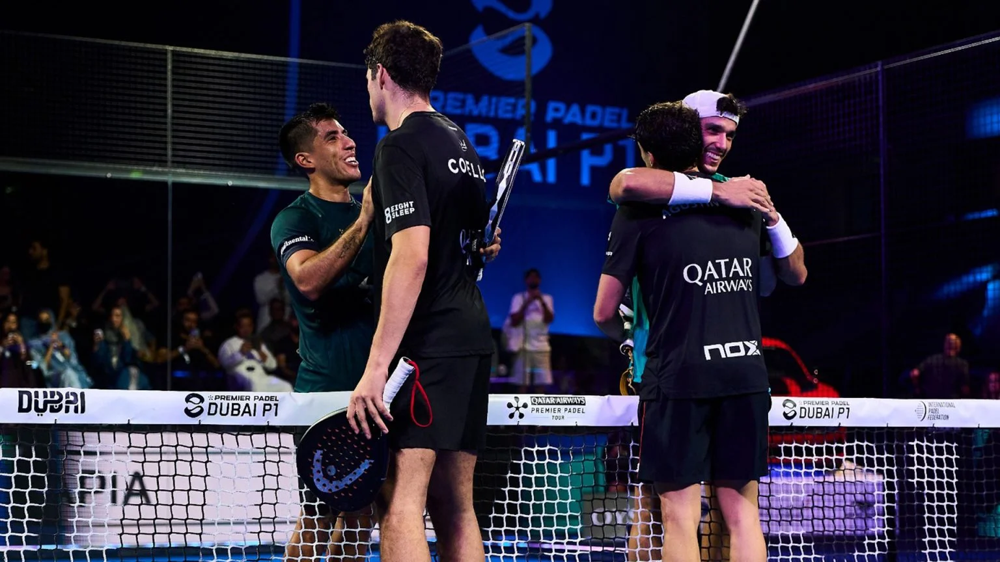

Coello y Tapia, la revolución
Los jóvenes españoles conquistan brillantemente el Madrid Premier Padel en su debut oficial juntos.

Los jóvenes españoles conquistan brillantemente el Madrid Premier Padel en su debut oficial juntos.

La balear cuelga la pala tras una década en la élite absoluta y la consecución de cuatro títulos mundiales.

Se confirma oficialmente un nuevo torneo de categoría en Riad dentro del calendario Premier Padel 2027.

La gran final masculina de Madrid emitida en Movistar+ rompe marcas y supera los 2 millones de espectadores.